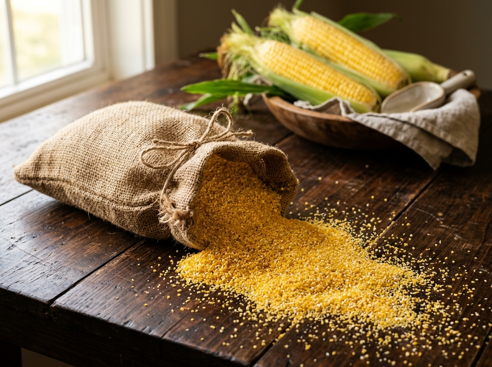

About Corn Grits
Nature's goodness in every granule • Botanical anatomy, fractured endosperm milling science, and culinary heritage.

What Exactly Are Corn Grits?
Corn Grits are coarse, milled granules derived from clean, selected corn kernels (Zea mays). Renowned for their rich nutritional density, natural sweetness, and versatile texture, corn grits serve as an indispensable cornerstone of both culinary traditions and modern industrial food processing.
At modern dry-milling facilities, each batch is produced from premium non-GMO field maize through dry-milling techniques that carefully separate the starchy endosperm from the germ and fibrous bran jacket, ensuring a pure, low-fat granule that cooks evenly.
Nutrition
Gluten-Free
Versatile
Anatomy of a Maize Kernel
Understanding how corn grits are extracted requires looking inside a single maize kernel. True corn grits are formed exclusively from the pristine starchy endosperm:
The Endosperm (Corn Grits Source)
The energy storehouse rich in complex carbohydrates and gluten-free plant proteins (zein). This is the only portion crushed and classified into commercial grits fractions.
The Germ (Removed for Shelf Stability)
The living embryo high in corn oils. Our modern degerminators mechanically separate the germ to ensure low fat (≤0.8%), preventing rancidity in extruded snacks and off-flavors in beer.
The Pericarp Hull (Bran Jacket)
The tough outer cellulose skin protecting the grain. Aspirators and polishers cleanly strip this layer so the resulting grits cook smooth without gritty husk fibers.
4-Step Precision Dry Milling Process
How raw field maize is refined into calibrated granular fractions in modern dry mills:
Incoming non-GMO maize undergoes high-capacity vibro-sifting, air aspiration, magnetic iron separation, and density destoners to eliminate all dust, chaff, and pebbles.
Kernels receive controlled moisture tempering. This toughens the bran and germ while keeping the hard endosperm brittle, allowing clean mechanical separation without shattering.
Modern dry-degerminators crack the conditioned corn along natural fault lines, effortlessly popping out the oily germ intact and scraping off the pericarp.
Multi-deck rotary plansifters pass granules through calibrated wire meshes, segregating them into standard codes: Grits 101, 101A, 108, 112, Meal, Flour, and Broken.